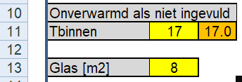
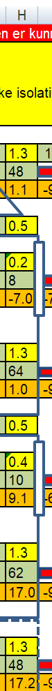
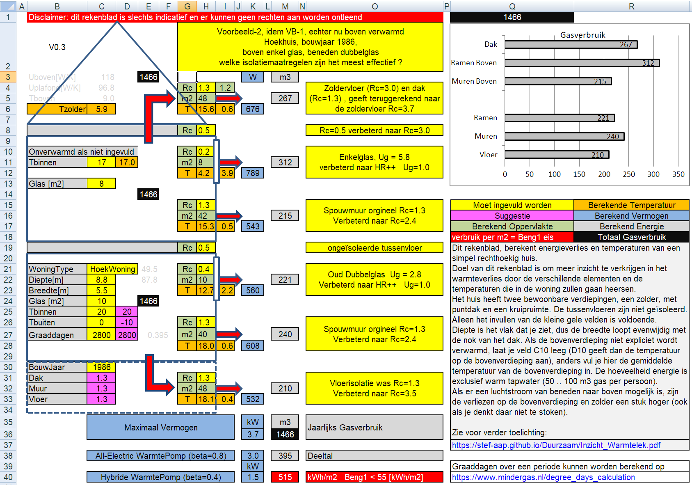
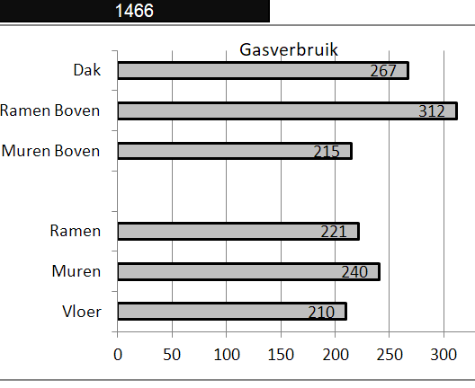
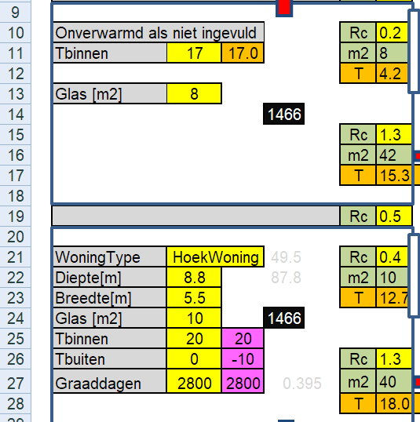
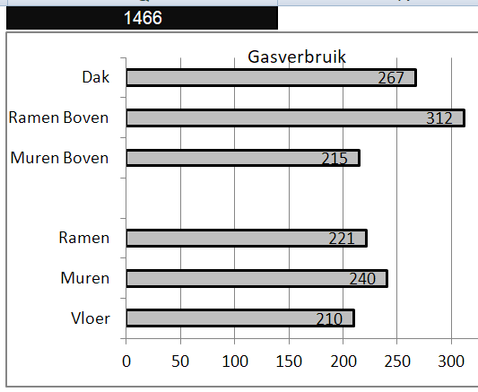
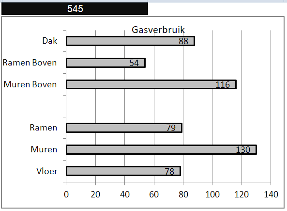
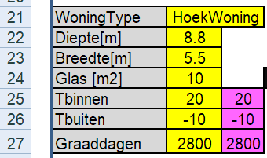
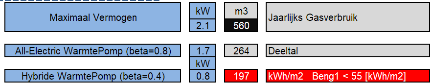

IWL_Voorbeeld_2
13 June, 2022
20:49
Omschrijving
Zelfde als voorbeeld 1, echter nu wordt er wel matig gestookt op de eerste verdieping.
Het betreft een hoekwoning gebouwd in 1986, waar nog geen extra isolatiemaatregelen zijn genomen.
De woning bevat beneden (oud) dubbelglas en boven enkel glas.
We veronderstellen dat er MATIG wordt gestookt op de eerste verdieping.
Bij deze woning wordt verondersteld dat er GEEN actieve luchtstromen tussen de verdiepingen zijn.
We willen bekijken wat de verschillende isolatiemaatregelen voor effect hebben op het energieverbruik en ook op het comfort hebben.
Conclusies
- Door het bij-isoleren van alle bouwelementen, kan het jaarlijks gasverbruik met ruim 900 m3 worden verlaagd (van 1470 m3 naar 550 m3)
- Als het bij-isoleren in stappen gebeurt, heeft de volgende volgorde de voorkeur Glas Boven/ Muren / ZolderVloer / Glas Beneden / Vloer
- Het verbeteren van de glasisolatie heeft niet alleen een gasbesparing tot gevolg, maar ook een sterke comfortverhoging (minder koude straling), de oppervlakte temperatuur van het verbeterde glas stijgt boven met ruim 9 graden (van 4.2 naar 13.5) en beneden met bijna 5 graden (van 12.7 naar 17.4)
- ls de zolder niet als woonruimte gebruikt wordt kun je (indien mogelijk) beter de zoldervloer isolatie verbeteren, dan de dakisolatie, immers dit vergt 4 keer minder isolatie materiaal en je omzeilt een deel van de kieren van de muur-dak aansluitingen
Gegevens van de woning

| Hier vullen we de eigenschappen van de begane grond van de woning in en Omdat we geïnteresseerd zijn in comfort, Een prettige waarden voor Tbinnen en Een veel voorkomende (slechte) Tbuiten (deze temperaturen hebben geen invloed op het berekende gasverbruik, wel op het berekende vermogen, dat dus niet juist zal zijn !!!) |
 | Hier moeten we het oppervlakte van het glas op de bovenverdieping invullen en Omdat we de bovenverdieping matig stoken vullen we in C11 de gewenste temperatuur van de bovenverdieping in |

| Nu vullen we in veld C3 het jaartal in, waarna in de velden daaronder de Rc waarden worden getoond die in dat bouwjaar minmaal verplicht waren |
 |
Vervolgens kunnen we alle Rc-waarden in kolom H invullen.
Ug-waarden:
Enkel glas Ug = 5.8
Dubbel glas Ug = 2.8
HR++ glas Ug = 1.0 HR+++ glas Ug = 0.7 Je kunt deze waarde natuurlijk door het rekenblad zelf laten omrekenen naar Rc-waarden, vul voor bijvoorbeeld dubbelglas in:
= 1 / 2.8
(het "= teken" is belangrijk) |
Totaal plaatje
Hier zien we dat het totaal plaatje met als resultaat het berekende gasverbruik in de zwarte velden en in veld D11 de temperatuur op de bovenverdieping (als we daar niet expliciet stoken). Verder zie je alle oppervlakte temperaturen bij de ingestelde binnen en buiten temperatuur. Nogmaals we zijn hier geïnteresseerd in gasverbruik en comfort en daardoor zijn de vermogens-getallen niet zinvol !!

Gasverbruik en Temperaturen
 |
Glas HR++ is bijna 6 keer beter dan het enkele glas op de bovenverdieping
Glas HR++ is bijna 3 keer beter dan het dubbele glas op de beneden verdieping Muren hebben vermoedelijk een spouw van 6 à 7 cm met daarin 3 cm glaswol. Door deze na-te-isoleren kan een Rc=2.4 worden bereikt. Vloer kan zondermeer naar een Rc van 3.5 worden gebracht. |
 | Voordat we een voorkeur voor de volgorde van de isolatie bepalen is het goed om eens naar de oppervlakte temperaturen te kijken.
Helaas geeft deze versie nog niet de temperatuur van het plafond en de eerste verdiepingsvloer maar daarvan weten we dat die goed is. Muren en vloeren zitten een paar graden lager dan de ruimtetemperatuur, zowel boven als beneden, dus dat is prima. De ramen beneden zijn echter minder dan 13 graden Celsius en boven zelfs slechts 4 graden Celsius, dus dat voelen we (door de straling) als een koude bron. Vanuit comfort is het dus aanbevelingswaardig om eerst het glas te verbeteren.
|
Alle maatregelen
Omdat zowel beneden als boven actief gestookt wordt, kunnen we in één keer alle maatregelen tegelijkertijd bekijken en onderling vergelijken.
Als alle maatregelen worden uitgevoerd, kunnen we ongeveer 900 m3 gas per jaar besparen.
Orgineel | Met verbeteringen |
 |  |
Als we de besparingen in een tabel zetten:
Zoldervloer Ramen Boven Muren Boven Ramen Beneden Muren beneden Vloer | 267 - 88 = 179 312 - 54 = 258 215 - 116 = 99 221 - 79 = 142 240 - 130 = 110 210 - 78 = 132 |
Ook sterk comfort verhogend
Ook sterk comfort verhogend
|
We zien dat de grootste besparing wordt behaald met het glas boven.
Als tweede grootste besparing volgen de muren en het dak.
Daarna de ramen beneden, alhoewel die vanuit comfort verhoging misschien naar voren gehaald moeten worden.
En de hekkensluiter is de vloer.
We zien nadat alle maatregelen zijn genomen, het grootste verbruik wordt veroorzaakt door de muren, en helaas kunnen we daar zonder rigoreuze maatregelen weinig aan doen.
Interessant is om ook naar voorbeeld-3 te kijken, want daarin worden dit voorbeeld en het identieke voorbeeld zonder directe verwarming van de bovenverdieping met elkaar vergeleken.
Warmtepomp
Belangrijke factor die niet in dit rekenblad wordt meegenomen is of het afgifte systeem van de warmte voldoende geschikt is voor lage temperatuur verwarming, dus die voorwaarde moet apart worden beoordeeld.
Tweede belangrijke omissie is dat de ventilatie en infiltratie nog niet zijn meegenomen
Voor het bereken van het vereiste vermogen moeten met name de Tbinnen en Tbuiten in C25 en C26 correct worden ingevuld

Hier staan dan de vermogens (exclusief ventilatie en infiltratie)

Totaalplaatje na alle maatregelen

Inzicht WarmteLek Woningen.